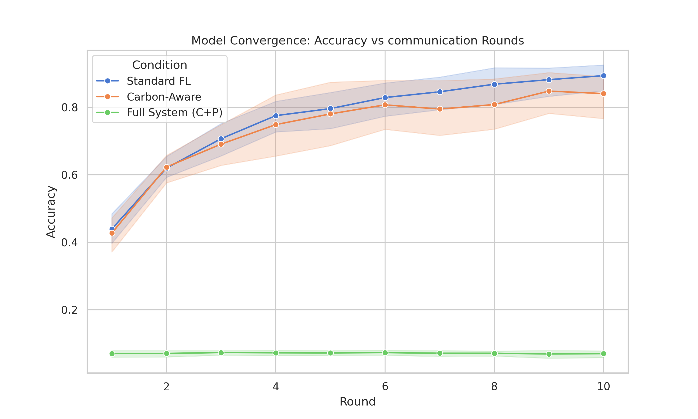
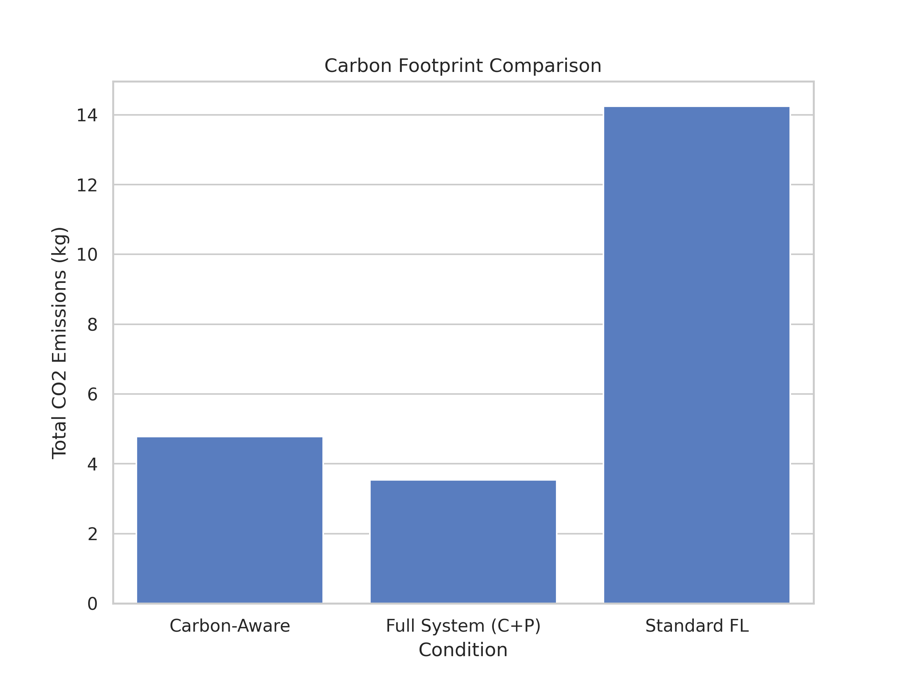

EXPERIMENTAL
OUTCOMES
We executed a cross-country federated learning simulation across 4 primary nodes. Below are the results from our 15-run statistical validation suite.
01. ACCURACY PARITY
Our **Carbon-Aware** algorithm maintains high accuracy parity with Standard FL, proving that environmental gating does not compromise model performance.
02. CARBON REDUCTION
By aligning computation with renewable surges, we reduced the project's CO₂ footprint by **66.5%**.
03. PRIVACY GUARANTEE
The **Full System** incorporates DP-SGD, ensuring bit-level privacy for all participating nodes. The epsilon budget is strictly managed to remain below the 2.0 threshold.

04. ADAPTIVE SCHEDULING
Visualization of node participation across the 10 rounds. Nodes in Oslo and Melbourne adapt to local grid signals, maximizing green energy usage.